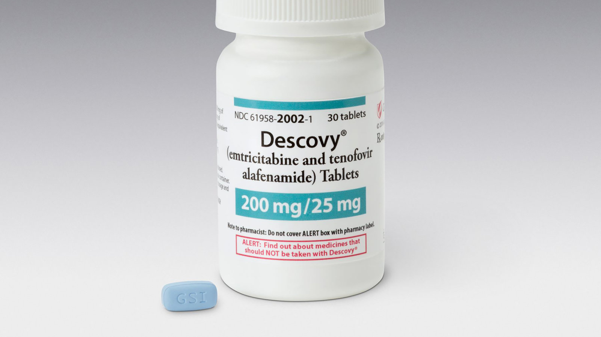
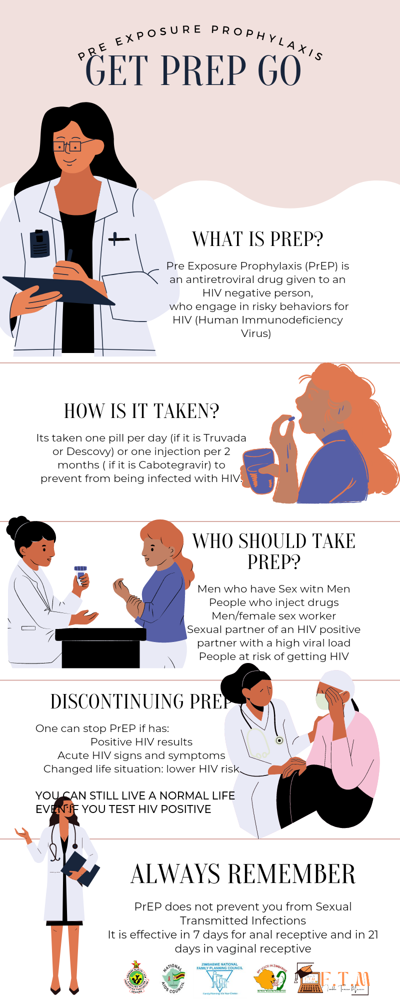

PrEP is abbreviated pre-exposure prophylaxis which is a medicine administered to prevent people from contracting the Human Immunodeficiency Virus (HIV). On PREP (Pre Exposure Prophylaxis)
The drug works by preventing HIV from replicating in the body. PrEP acts as a catalyst that helps the body produce antibodies, which help diseases causing germs and viruses. If adhered correctly, PrEP eliminates the risk of contracting the virus after exposure.
There are two ways to take it. One tablet per day, for seven days before contact and every day for as long as needed. Patients can take PrEP “on-demand,” that is, before having planned sex.
The most common side effect is dizziness, nausea, and headache. However, the side effects often clear up after a week.
PrEP can be pills or shots.

There are two pills approved for use as PrEP: Truvada and Descovy.
Truvada • Truvada is for people at risk through sex or injection drug use.

Descovy is for people at risk through sex. Descovy is not for people assigned female at birth who are at risk for HIV through receptive vaginal sex.
What is cabotegravir?
Cabotegravir (CAB-LA) is a prescription medicine approved by the U.S. Food and Drug Administration (FDA) and the Medicines Control Authority of Zimbabwe.
Cabotegravir oral tablet
For the short-term treatment of HIV infection in adults and adolescents 12 years of age and older who weigh at least 35 kg and who meet certain requirements, as determined by a health care provider. When used for HIV treatment, cabotegravir is always used with the HIV medicine rilpivirine (brand name: Edurant).
• For short-term PrEP to reduce the risk of HIV infection in adults and adolescents who weigh at least 35 kg.
Long-acting injectable Cabotegravir
For HIV PrEP to reduce the risk of HIV infection in adults and adolescents who weigh at least 35 kg.
CAB-LA is an intramuscular injectable, long-acting form of PrEP, with the first 2 injections administered 4 weeks apart, and followed thereafter by an injection every 8 weeks. CAB-LA was shown to be safe and highly effective among cisgender women, cisgender men who have sex with men, and transgender women who have sex with men in randomized controlled trials. Together, these landmark studies found that use of CAB-LA resulted in a 79% relative reduction in HIV risk compared with oral PrEP, where adherence to taking daily oral medication was often a challenge. Long-acting injectable products have also been found to be acceptable and sometimes preferred in studies examining community PrEP preferences.
The Need for PrEP

Oral PrEP taken daily during periods of substantial risk of HIV infection, is a highly-effective prevention strategy, and can reduce the risk of acquisition of HIV through sexual intercourse by more than 90%. The level of protection provided by oral PrEP does not differ by age, sex, or mode of acquiring HIV - rectal, penile or vaginal exposure; however, the level of protection is strongly correlated with adherence. High adherence to oral PrEP results in a high level of protection from HIV infection whereas suboptimal adherence does not offer the expected protective benefits.
• Anyone in a sexual relationship with someone who has tested HIV-positive
• Gay or bisexual men who engage in anal sex without the use of a condom
• Gay or bisexual men who have been diagnosed with an STI in the past 6 months
• Straight men and women who do not use condoms when engaging in sex with partners who are at a high risk of HIV infection
• Straight men and women who do not regularly use condoms while having sex with partners of unknown HIV status
• People who have used injected drugs in the last 6 months and shared needles
• Anyone who has been in a drug treatment program in the past 6 months.
Identify Key and Vulnerable Populations (KVP) For PrEP
Oral pre-exposure prophylaxis (PrEP) is recommended for persons at substantial risk for HIV, including
• female sex workers (FSW),
• men who have sex with men (MSM),
• people who inject drugs (PWID), and
• transgender women (TGW)
• prisoners
The relationship between PrEP effectiveness and Adherence
PrEP is highly effective for preventing HIV when taken as prescribed by a health care provider who can be a Nurse or a Doctor. PrEP is less effective when not taken as prescribed. Since PrEP only protects against HIV, correct and consistence use of condoms is highly recommended for the protection against other sexual transmitted infections (STIs). Condom use is also important to help prevent HIV if PrEP is not taken as prescribed.
Adherence is described in different parts but all in all making up adherence. Adhering to PrEP is when a PrEP patient take the pills or shots at the right time and every day. A patient may be expected to meet clinical attendances as per the health care provider appointment date. Some support meetings that are hosted at the facility- hospital or clinics or anywhere where the health care provider plans the meeting to be, are recommended for the PrEP patient to attend so that they are able to learn much more and share experiences that they encounter during the period of them taking the medicine. By that that constitute a well adhering of PrEP.
Why We Need PrEP?
There are several effective HIV prevention interventions already (e.g. condoms, harm reduction for PWID), we need another prevention intervention because…
• New HIV infections still occur despite prevention efforts
• New HIV infections among priority and key populations are quite high
Despite other HIV prevention strategies to prevent HIV infection, new infections still occur. And high among priority and key populations. PrEP provides an additional prevention intervention to be used with existing interventions (such as condoms). It is not meant to replace or be a substitute for existing interventions.
The PrEP regimens as approved in National Guidelines
• OPERATIONAL AND SERVICE DELIVERY MANUAL FOR THE PREVENTION, CARE AND TREATMENT OF HIV IN ZIMBABWE
• WHO IMPLEMENTATION TOOL FOR PRE-EXPOSURE PROPHYLAXIS (PrEP) OF HIV INFECTION.
Frequently Asked Questions about PREP?
Click here.
REFERENCES
1. https://www.who.int/news/item/28-07-2022-who-recommends-long-acting-cabotegravir-for-hiv-prevention
2. https://clinicalinfo.hiv.gov/en/drugs/cabotegravir-1/patient
3. https://www.unaids.org/en/resources/presscentre/pressreleaseandstatementarchive/2021/december/20211222_cabotegravir
4. https://www.prepwatch.org/resources/long-acting-injectable-cabotegravir-for-hiv-prevention-what-do-we-know-and-need-to-know-about-the-risks-and-consequences-of-cabotegravir-resistance
5. "Apretude- cabotegravir kit". DailyMed. Retrieved 24 December 2021.
6. Chingono, Nyasha (20 October 2022). "Zimbabwe becomes first African nation to approve HIV prevention drug".The Guardian. Retrieved 21 October 2022.
7. "Adopted USANs" (PDF). American Medical Association. Retrieved 19 September 2014.
8. World Health Organization (2015). "International nonproprietary names for pharmaceutical substances (INN): recommended INN: list 73". WHO Drug Information. 29 (1): 70–1. hdl:10665/331088.
9. Ryan G (7 July 2020). "Injectable PrEP Is Even More Effective Than Daily Truvada". Poz. Retrieved 9 November 2020.
10. Ryan G (9 November 2020). "For Women, Injectable Cabotegravir Is More Effective Than Truvada as PrEP". Poz. Retrieved 9 November 2020.
11. OPERATIONAL AND SERVICE DELIVERY MANUAL FOR THE PREVENTION, CARE AND TREATMENT OF HIV IN ZIMBABWE
12. https://apps.who.int/iris/bitstream/handle/10665/279834/WHO-CDS-HIV-18.10-eng.pdf